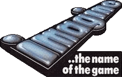
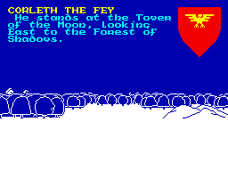

The Golden Years - 1984
The post-Christmas slump of 1984 was the most serious yet, but the year began with a glut of new games, two new computer magazines - Crash and Your Spectrum - and the release of a new machine from Sinclair.
The QL had originally been conceived as a portable business computer with a built-in flat screen. What it ended up as was a flawed, poorly built home computer. The date of it's release could not have been planned worse either. Despite Sir Clive's appearance in a TV ad for the QL, the public greeted it with caution and the reviews were very cool. Several years into the home computer revolution, the Spectrum was beginning to look old. Competitors' machines were sporting 'proper' keyboards and bigger memories. Something new was expected from Sinclair's huge support base and the QL was not it.
A 'Super Spectrum' had been under development, but complacency on the part of Sir Clive caused him to cancel the project, convinced that the existing Spectrum's popularity was such that there was no need for a new model just yet.

When it became apparent that a new machine was needed sooner rather than later, there wasn't enough time to develop a replacement system from scratch, so Sinclair opted for producing a cheap stopgap: the Spectrum+. This was essentially an old Spectrum housed in a QL-style keyboard. There were no new features nor was there an increase in memory. It was released in October, by which stage all the major retailers had already stocked up on the old rubber-keyed model. All, that is, save WH Smith, who had presumably been tipped off by Sinclair in advance. The rest of the high street now had thousands of computers on hand that had been effectively rendered obsolete. Furthermore, reports were filtering back to the press about the unreliability of the new Spectrum. Sinclair's reputation with the retailers, the press and the public was starting to crumble.
Although the fortunes of Sinclair were on the wane throughout 1984, the games market recovered from its early slump to finish the year buoyant and full of promise, having produced more classics than ever before.
It also witnessed the launch of a new magazine in the form of Crash, which finally gave the kids what they wanted - a games-orientated publication, chock full of reviews rather than another technical rag aimed at an older audience.

Crash's co-founder and original editor Roger Kean wrote most of the early issues himself, relying on local school kids for his reviews. Despite its amateurish roots, it was blessed with a genuine enthusiasm for games that other magazines lacked, plus superb artwork from Oliver Frey. It was an instant hit and would remain the market leader for years to come.
In the software world, one event dominated all others: the fall of Imagine. Such was their prominence at the time, that their demise was taken by many to represent the death throes of the home computer 'fad'. In truth, the issue was considerably more complex than a juvenile obsession running its course. Imagine's collapse was more indicative of managerial incompetence and naivity within the industry, than of the computer bubble bursting.
After the enormous success of their 1982 game Arcadia, Imagine had spent the following year advertising extravagantly and making impressive boasts about their forthcoming projects. They even reached the national press with a story of how their 16-year old programmer, Eugene Evans, was earning £35,000 a year. They added substance to their image by renting plush offices in Liverpool, the heartland of Britain's software industry, and filling it with piles of computers, ranks of young programmers and a car park full of sports cars.
In the run-up to Christmas 1983, Imagine had bought the entire capacity of the country's largest tape duplicator. Their efforts to foil the competition backfired disastrously and the New Year left them with a warehouse full of unsold stock. In desperation, they dropped their prices and enraged the shops, who were now expected to make no profit on their shelves of Imagine tapes.

A series of misguided ventures, poor games and primarily the directors' lack of interest in doing anything other than reaping personal benefits, resulted in a dramatic collapse. In the aftermath, it became clear that Imagine had never been the company they had pretended to be. Their expensive cars and offices had all been rented, their extravagant advertising was never paid for and their image was completely self-invented. In fact, very few of their games had ever been of the high quality that their publicity promised and in the end the only bubble to have burst was that of their own hype.
Nevertheless, the national press jumped on it with doom-and-gloom stories about the end of the computer fad. As far as they were concerned it was just another flash-in-the-pan trend which had long overstayed its welcome. To make matters appear even worse, it was a year in which a record number of software companies went bust, but the reason behind this slump in the market wasn't diminishing interest levels.
The pace of development in the industry over the previous year had seen a proliferation of new software houses, all eager to get their hands on a slice of this tasty new cake. Unfortunately, the cake was not as large as the hype around it suggested and the market became flooded with software of dubious quality, all fighting for the custom of an increasingly discerning public. The major retailers found themselves stocking up with sub-standard games that they could not shift, and were reluctant to buy in any new titles until they had done so. This bottleneck impacted on the distributors and in turn on the software houses who could not get their new games into the shops. As the cash flow dried up, many companies slipped into bankruptcy and rumours of a crisis began.
The lesson that the major shops learnt from this experience was to deal in more mainstream games and avoid taking risks with less obviously marketable titles. As well as sorting the wheat from the chaff, this made it increasingly difficult for many original games to find their way onto the shelves, let alone sell. A prime example of this was Automata's Deus Ex Machina. Despite heavy advertising, critical praise and an industry award, it sold just 700 copies in its first two months on release - including the usually busy Christmas period. Although it was admittedly an especially unusual and demanding game, the decision that it was not good enough to sell was being made by the shops and not by customers. In other words, by controlling the supply, they created the demand.
This situation did not lead to a terminal decline and many high quality games still found their way through to the shops, even at the height of the crisis. It did change many attitudes within the industry though, promoting a more professional approach from the established players and putting such a squeeze on smaller companies that they either went bust or looked towards specialist shops and mail order to sell their wares.
Although there was a large amount of poor software launched, most Spectrum owners were probably unaware of the extent of the problem - or even that there was a problem at all - since there were more top quality games released than ever before. If 1983 had seen the Spectrum really take off, 1984 was the year it soared high. The games set new standards, many of the titles sounding like a prestigious roll of honour, even today. The Spectrum was generating a rapturous buzz in playgrounds across Britain, turning them into a forum for games-related discussion. Pocket money that had previously been frittered away on sweets and comics was now carefully saved towards buying new games. Saturday morning shopping trips, once the scourge of every youth's weekend, suddenly became breathlessly exciting opportunities to examine the new releases and perhaps even part with some of that cash.

After the arcade shoot 'em ups that had dominated the previous year, in 1984 the home computer dragged itself away from conversions and developed genres of its own. Jet Set Willy, Matthew Smith's follow-up to Manic Miner, was the most eagerly awaited game of the year and became in instant classic, despite being devilishly difficult (partly due to the infamous Attic bug). Other superior platformers included Gremlin's excellent Wanted: Monty Mole and the loveable Chuckie Egg from A&F.
Ultimate began by unleashing the brilliant Lunar Jetman and the frantic Atic Atac at the start of the year, chipped in with the fun and colourful Sabrewulf during the summer, and finished the year off with the ground-breaking Knight Lore, a beautiful isometric 3D platformer.
In 1988, the Stamper brothers, who had headed Ultimate, revealed that Knight Lore had actually been completed before Sabrewulf, which was in the shops months earlier. They rightly felt that if Knight Lore had been released first the sales of Sabrewulf would have suffered. As it happens, Sabrewulf turned into the best selling Spectrum game of all time, shifting more than 350,000 copies (regardless of Activision's later claims about Ghostbusters).
Another trend that began this year was the tie-in. Richard Wilcox Software (soon to become Elite Systems) got the ball rolling with Blue Thunder, which was never officially licensed, and then Airwolf which was. The year would end with companies fighting for the rights to produce licensed games, aware that the title alone would catch the eyes of younger buyers.

The adventure game rode high in 1984. Beyond released Mike Singleton's epic Lords of Midnight in July, a game that rolled adventure and strategy into a vast mythical world blessed with wonderful graphics and dripping with atmosphere. For many people, this was the sort of game they had been waiting for since home computing began and was probably the first Spectrum title to warrant the term 'epic'. Despite the popularity of the reaction-based, arcade-style games, software companies were recognising that there was an interest in the slower-paced genres of adventure and strategy. Melbourne House did well with Hampstead and Sherlock, and their graphics-based strategy/adventure, Mugsy.
Other games worth a mention are Design Design's Dark Star for its super smooth graphics and Gargoyle's inspired arcade adventure Tir Na Nog. Another obvious hit was Skool Daze, which was popular despite being a bit of a busman's holiday for most people who played it. One of the games of the year had to be Micromega's 3D Deathchase (the words 3D featured strongly in countless titles around this time), a rapid first person racing-shooter through increasingly dense forest.
Following the departure of Matthew Smith to Software Projects earlier in the year, Bug Byte struggled to come up with any meaningful titles. Quicksilva also fell quiet towards the end of the year, having started strongly with the revolutionary 3D Ant Attack, the fun Bugaboo and the colourful arcade adventure, Fred.
The profile of Ocean Software gathered speed throughout the year, starting with the arcade conversion, Hunchback and finishing with the smash hit Daley Thompson's Decathlon, which cashed in on the year's Olympic games, while reducing Spectrum keyboards to rubble. Their other major moves of the year were buying up the well-known Imagine name for future releases, and having a hand in the birth of a new label. Joining forces with Centre Soft, the West Midlands software distributors, they began to import, manufacture and market American software under the name of US Gold.
Many companies spent the latter part of 1984 working on games for the Commodore 64. September’s PCW Show at Olympia, which normally showcased Christmas releases, was a disappointing event with a paucity of new titles. What did appear, however, was generally of good quality.
All in all, 1984 was a turbulent year that saw a reversal in Sinclair's fortunes, a faltering software market and plenty of negative comment about the future of the industry.
Key Events of 1984
JANUARY: Magazines Crash and Your Spectrum are launched to compete against the established publications such as Sinclair User. Both magazines aim for a more games-orientated outlook. Meanwhile, The Sinclair QL computer is released, and Matthew Smith leaves Bug Byte for Software Projects.
MAY: Microdrive (£49.95) and Interface 1 (£29.95) released.
JUNE: Software house Imagine goes bust owing hundreds of thousands of pounds. Also, Rabbit Software go into liquidation.
JULY: Crystal Software change their name to Design Design.
AUGUST: Carnell Software go bust.
SEPTEMBER: Sinclair announce their intention to spend £2.5 million on pre-Christmas promotion of the Spectrum, and Richard Wilcox Software change name to Elite Systems Ltd.
OCTOBER: ZX Spectrum+ is launched, costing £179.95. It is bundled with Scrabble, Make a Chip, Chequered Flag, Psion Chess, VU-3D and Tasword 2. Meanwhile, Centre Soft, the West Midlands software distributors, join forces with Manchester-based Ocean to import, manufacture and market American software under the name of US Gold.
Games of 1984
Chuckie Egg (A&F), Lords of Midnight (Beyond), Antics (Bug Byte), Dark Star (Design Design), Fighter Pilot (Digital Integration), Scuba Dive (Durell), Doomsday Castle (Fantasy), Booty (Firebird), Ad Astra (Gargoyle), Tir Na Nog (Gargoyle), Wanted: Monty Mole (Gremlin), Legend of Avalon (Hewson), Alchemist (Imagine), Final Mission (Incentive), Temple of Vran (Incentive), Mugsy (Melbourne House), Sherlock (Melbourne House), Codename Mat (Micromega), Deathchase (Micromega), Full Throttle (Micromega), Kentilla (Micromega), Wheelie (Microsphere), Daley Thompson’s Decathalon (Ocean), Hunchback (Ocean), Chequered Flag (Psion), Ant Attack (Quicksilva), Jet Set Willy (Software Projects), Atic Atac (Ultimate), Sabre Wulf (Ultimate), Android 2 (Vortex), TLL (Vortex)
Films of 1984
Amadeus, Beverly Hills Cop, The Bounty, Ghostbusters, Gremlins, Indiana Jones and the Temple of Doom, The Karate Kid, The Killing Fields, A Nightmare on Elm Street, Once Upon a Time in America, A Passage to India, Police Academy, Romancing the Stone, The Terminator, This is Spinal Tap, Top Secret!
Singles of 1984
Pipes Of Peace (Paul McCartney), Relax (Frankie Goes To Hollywood), Radio Ga-Ga (Queen), 99 Red Balloons (Nena), Hello (Lionel Richie), Against All Odds (Phil Collins), The Reflex (Duran Duran), Automatic (Pointer Sisters), Wake Me Up Before You Go Go (Wham!), Two Tribes (Frankie), Careless Whisper (George Michael), I Just Called (Stevie Wonder), The War Song (Culture Club), Freedom (Wham!), I Feel For You (Chaka Khan), Do They Know It's Christmas (Band Aid)